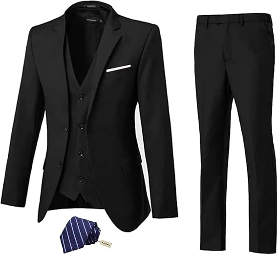
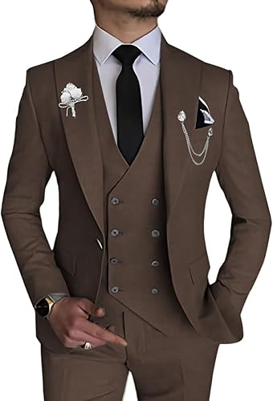

Trajes para caballero
Traje para caballero
Trajes para caballero
Traje para caballero
Traje de 3 piezas para hombre

Material: 70% poliéster, son cómodos, transpirables, más suaves, fáciles de lavar.
El paquete incluye: saco, pantalones, chaleco, traje de 3 piezas.
Color: Negro.
US $78.75
Instrucciones de cuidado del material: Limpieza en seco, Se debe colgar siempre y el planchado a vapor.
Opción
Talla S
Talla M
Talla N
Talla L
Traje de 3 piezas de corte ajustado.

Características:Chaqueta de un botón, chaleco de doble boton, cuello en U,botón dorado, pantalones de cintura ajustable.
Tipo de tejido75% poliéster.
Color: Café
US $150.00
Instrucciones de cuidado del material: Solo limpieza en seco.
Opción
Talla S
Talla M
Talla N
Talla L